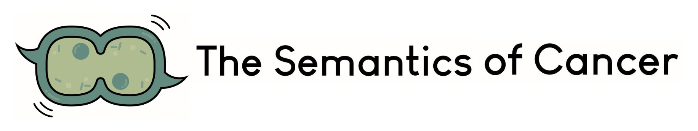

Prostate Cancer Mortality After Relabeling Low-Grade Prostate Cancer as Precancerous
Vickers et al. 2026
JAMA Oncology, 12(7), 767-771.

Vickers et al. 2026
JAMA Oncology, 12(7), 767-771.
Shoemaker, Khlystova & Rett 2025
Health Communication, 41(9), 1619–1628.
Cooperberg et al. 2024
Journal of the National Cancer Institute, 117(3), 402-405.
Berlin et al. 2023
Journal of the National Cancer Institute, 115(11), 1364-1373.
Paner et al. 2023
Advances in Anatomic Pathology, 30(5), 293-300.
Raghunathan, Rett & Eilber 2023
Journal of Clinical Oncology, 41, e24216-e24216.
Eggener et al. 2022
Journal of Clinical Oncology, 40(27), 3110-3114.
Labbate, Paner & Eggener 2022
World Journal of Urology, 40(1), 15–19.